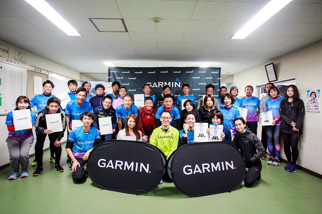
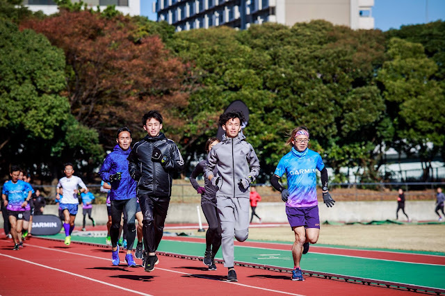

神與氣

從小就沉迷於日本的動畫《七龍珠》，反覆重看了好幾次。動畫裡頭每一個角色的功力高下是由他的「氣」所決定。這幾天在日本的東京跟一群跑者分享科學化訓練與姿勢跑法，在隔了一層語言的情況下，雖然聽不懂他們說什麼，但透過跑步這項運動竟然產生「很深」的連結感，有點不可思議。

在前往日本之前就知道這次台下的人都是實力堅強的跑者、教練與運動科學家，照片中領跑前三位的五公里 PB 都在 14 分內，由右至左分別是砂田貴裕、八木勇樹、三田裕介。這三位跑者的背景都相當驚人，在我們的眼中他們都屬神人：
砂田曾經在一九九八年打破 100 公里的世界紀錄，創下 6 小時 13 分 33 秒的新紀錄(等於用 3:44/km 的配速跑完 100km)，現在的世界紀錄仍由他保持著，已經接近 20 年沒有人可以打破，而且接下來兩年的 100 公里成績都在 6 小時 20 分以內，成績非常穩定，到了二〇〇〇年還打破了自己全馬的 PB，跑出 2 小時 10 分 08 秒，是全場全馬 PB 最快的跑者。能夠同時有 100km 的耐力，又能在同一時間提高全馬的速度，真是非常厲害的一位跑者。這位已經 44 歲的跑者，在這兩天的課堂上坐在第二排，從頭到尾都非常認真，精神一直很好，而且也協助搞笑讓上課的氣氛更輕鬆。戶外實作課時，也很認真去執行每一個動作，不會因為年紀比較大或實力比較強就在旁邊看或敷衍過去。他的認真與放鬆，讓我非常感動。
三田裕介的五千 PB 是 13 分 47 秒，一萬 PB 是 28 分 15 秒，在日本最出名的戰績是二〇一〇年一舉協助早稻田大學拿大学駅伝 3 冠(出雲駅伝、全日本駅伝與箱根駅伝)，在第一天的課程空檔就主動邀請我到他的工作室去，也會主動詢問「拉」與「踩」在教學指令上的差異性，他說「拉」的指導語會使一般跑者的重心在後面，他問我會怎麼解決。因為他的主動提問，讓我有機會利用課堂上的材料來說明！這是每次上課我最喜歡的過程之一了。
八木勇樹似乎一開始就受到最多人的重視，只有我還不清楚他的來歷。他的五千 PB 是 13 分 37 秒、一萬 PB 是 28 分 42 秒，半馬 PB 是 61 分 37 秒。他曾是早稻田大學取得大学駅伝 3 冠時的主將，仍是現役選手，而且也在創業，建立了「SPORTS SCIENCE LAB」(官網：https://sslab.tokyo/)。
第一天課後在飯店分析他們的跑姿，每一個人從腳掌觸地到關鍵跑姿的時間都在 0.03 秒，落下的姿勢既放鬆又自然，拉起的動作既流暢又輕快，就像 Jason 說的，好像從地面上飄過去一樣。
除了實業團的跑者之外，更令人印象深刻的是其他業餘跑者。有其他跑團的指導者、大學教授、公務員、鍼灸師與搞笑藝人(猪瀬祐輔與小宮寛晶)。猪瀬在練動作時還會一起上來勾著我的手一起搞笑。
離開前，跟幾個人握手拍照時，我看到他們的眼神充滿熱忱，語言不通之下，好像反而是用眼神在交流，讓我印象非常深刻，有幾位嚴肅跑者有著非常「深沉渾厚」的眼神，從眼神中就可以感覺到他們的氣場非常強大，頓時敬佩與謙卑之感油然而生，「是怎麼練就出來的呢？」我想。
過去我也見過許多實力非凡的跑者，但很少有過「氣很強」的感覺，但這次卻明顯地感受到了什麼是「強」，而且不只兩三人，是一群。這絕對跟科學無關，而是一種精氣神內斂且強化過後的展現，也許這也是來自日本的壓抑文化。
身體上的強，是指跑者非凡的速度，而速度是來自於「Compact」的身體與較大的落下角度；心志上的強，是否也可以由「Compact」的文化所形塑？心志的強大程度可以量化嗎？動畫《七龍珠》設定的「氣」是可以被量化，也可以被感應到。但現實世界呢？可以量化嗎？
我(現在)的答案是不能，它只能靠感覺，強大的心志會從眼神裡透露出來。「氣」是一種真實的存在，只不過無聲無形也無法量化(目前)。身在這群氣場強大的日本跑者之中，我感覺就像在無邊無際的氣海裡的一艘小船一樣，極為渺小，那就像從狹小的公寓裡出來剛見到大海的感覺。雖然我這兩天的角色是老師，但我只是在分享知識與工具的用法；從他們身上我見識到更多無法用語言傳達的「境界」，一種極端嚴謹、執著、自律的強大個體所展現出來的一種「神氣」。
這是人生中第一次來日本本島，也是第一次講課之後有這麼強烈的謙卑感，謝謝 Garmin 帶我走這一趟神奇的旅程。